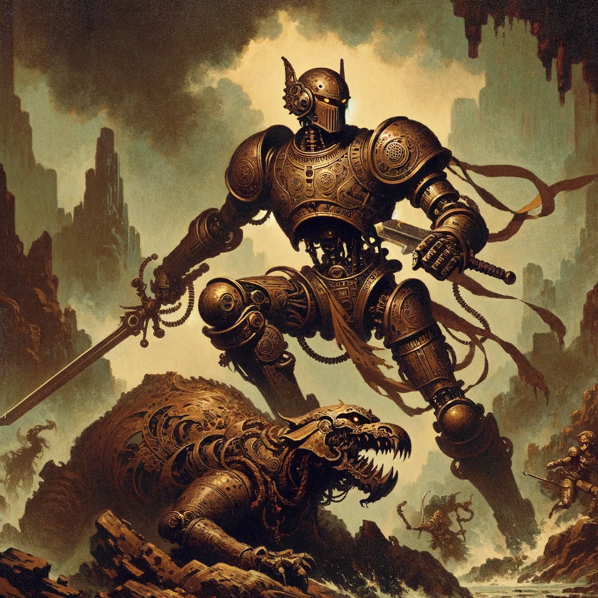

Description
The Machani is a unique class in ancient Greece, blending technology with ancient traditions to create a formidable warrior. Encased in bronze armor, the Machani is a walking arsenal of deadly weapons and technology, using their advanced knowledge to outwit and outmaneuver their enemies.
Hit Points:
- Hit Die: 1d12 per Machani Level
- Hit Points at 1st Level: 12 + Constitution Modifier
- Hit Points at Higher Levels: 1d12 + Constitution Modifier per Machani Level after 1st
Proficiencies:
- Armor: None
- Weapons: Simple Weapons, Martial Weapons
- Tools: None
- Saving Throws: Strength, Constitution
- Skills: Choose two: Athletics, Intimidation, Perception, History, Persuasion, and Survival
Starting Equipment:
Lvl 1: Bronze Initiate
- Bronze Armor (Passive): The Machani is encased in a bronze armor, granting them a base armor class of 16 and resistance to fire damage.
- Technological Expertise (Improvisation): The Machani gains proficiency in both Tinker's Tools and Smith's Tools, allowing them to repair and modify their armor and weapons.
Lvl 2: Metallurgy Novice
- Elemental Arrows (Action): The Machani can now throw arrows with elemental energy, dealing 1d6 fire, ice, or lightning damage. Range 50ft. Unlimited supply. Ups by 1d6 per level after acquisition.
- Quick Draw (Passive): The Machani can draw and attack with their weapons quickly, gaining an extra attack action per turn.
Lvl 3: Technological Savant
- Improved Bronze Armor (Improvisation): The Machani's bronze armor now grants them a base armor class of 18 and resistance to fire and lightning damage.
- Construct Companion (Action): The Machani can summon a small construct companion that serves as an extra set of hands and can perform simple tasks such as carrying items or attacking enemies. The construct has 5 hit points per Machani level and an attack with damage equal to twice the Machani's level. Launches your choice of fire, lightning, or ice projectiles with a range of 30ft and an unlimited supply. Upon destruction, the construct needs to have a successful Intelligence roll to be repaired and cannot be repaired in combat.
Lvl 4: Battle Strategist
- Tactical Insight (Improvisation): The Machani gains an advantage bonus to their Initiative, allowing them to act more quickly in combat.
- Trap Disarming (Improvisation): The Machani gains the ability to disarm traps with ease, allowing them to navigate dangerous areas more safely.
Lvl 5: Technological Titan
- Improved Bronze Armor (Improvisation): The Machani's bronze armor now grants them a base armor class of 20 and resistance to fire, lightning, and cold damage.
- Shield Wall (Bonus Action): The Machani gains the ability to create a shield wall, granting them and their allies cover and protection from enemy attacks. Shield wall spans 15ft and can be used in an instant to protect allies. Last until the Machani uses an action or moves from the space where the shield wall was created. Can be used 3 times per short rest.
Lvl 6: Master of War
- Technological Arsenal (Action): The Machani gains the ability to summon a technological arsenal, granting them access to a variety of weapons and tools in combat. Weapons summoned this way last 5 turns. Can be used once per long rest.
Lvl 7: Technological Juggernaut
- Pulse Cannon (Bonus Action): The Machani gains the ability to summon a pulse cannon, firing a powerful blast that deals 2d12 to enemies. Range 75ft. Enemies must succeed a DC 12 Strength saving throw, on fail, enemy is thrown back 15ft and becomes prone for 1d4 rounds. Can be used 3 times per long rest.
Lvl 8: Bronze Behemoth
- Improved Bronze Armor (Improvisation): The Machani's bronze armor now grants them a base armor class of 22 and resistance to all elemental damage.
- Godly Gravitation (Bonus Action): The Machani gains the ability to create a heavenly gravity field, pulling enemies towards them and making them easier to hit. Pulls enemies into within 15ft and has a pull range of 50ft. If an enemy succeeds in a DC 12 Dexterity saving throw, the field has no effect. Can be used 5 times per short rest.
Lvl 9: The Unstoppable Machani
- Technological Mastery (Bonus Action): The Machani gains mastery over their technology, granting them bonuses to damage and armor class when using their weapons and armor. Adds 3d12 to any Machani attack and adds +10 AC to Machani’s bronze armor. Last 5 rounds. Can be used once per long rest.
Lvl 10: God of the Forge
- Overwhelming Power (Action): The Machani's damage output and defense are increased by 100%, and they gain immunity to all forms of crowd control and stun effects. Last until next long rest. Can be used once every 5 days.